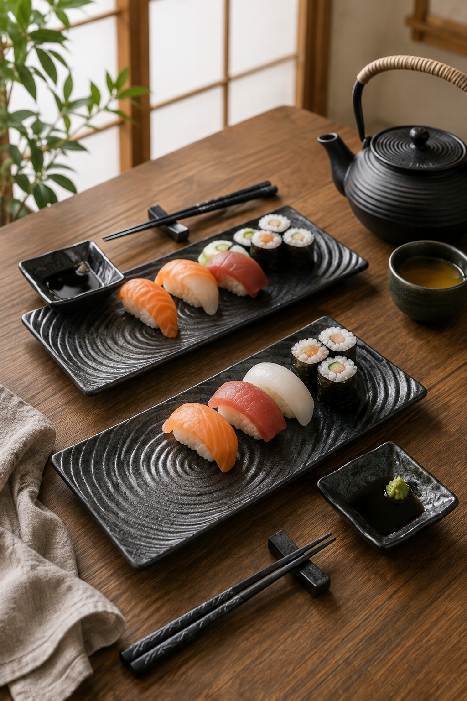

Serve sushi in true Japanese style with this elegant ceramic sushi serving set. Perfect for family dinners, date nights, entertaining guests, or thoughtful gifts.
Check Price on AmazonAs an Amazon Associate, I earn from qualifying purchases.
Create restaurant-quality sushi nights at home with this beautifully crafted Japanese ceramic serving set. The elegant black stone-inspired finish complements modern, Japandi, and traditional interiors while making every meal feel special.
Whether you're serving sushi, sashimi, appetizers, desserts, or snacks, this versatile set brings authentic Japanese presentation to your dining table.
Beautiful tableware transforms ordinary meals into memorable dining experiences. Enjoy authentic Japanese presentation every time you serve your favorite dishes.
View on AmazonAs an Amazon Associate, I earn from qualifying purchases.
Please refer to the Amazon product page for the manufacturer's care instructions. Hand washing is generally recommended to help preserve the beautiful finish.
Absolutely! It's perfect for sashimi, appetizers, desserts, tapas, grilled foods, and many other dishes.
Yes. The elegant Japanese design makes it an excellent gift for birthdays, weddings, housewarmings, holidays, and anyone who loves Japanese cuisine.
Enjoy restaurant-style presentation and elevate every meal with this beautiful Japanese sushi serving set.
Check Price on AmazonAs an Amazon Associate, I earn from qualifying purchases.